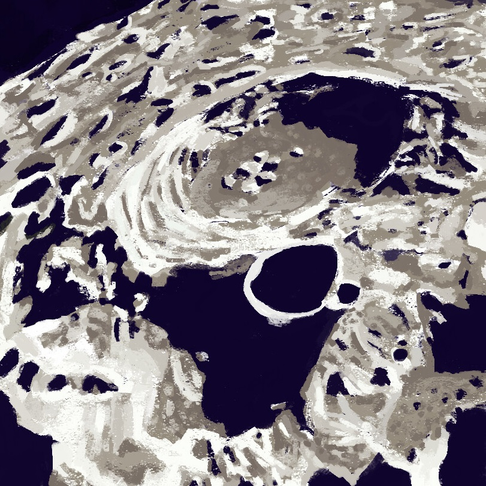

Surface of the Moon
I have been watching plenty of shows about space recently and I used that as inspiration for this project. Its been difficult to find my "style", but I am slowly moving towards something I appreciate and enjoy doing. I love the look of digital oil painting and that was my goal for this piece. This was all done with a single brush to limit myself as I try to understand each brush in my pack better.